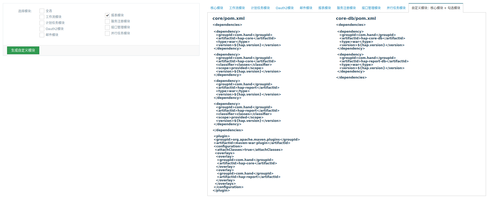

本文主要描述 HAP 3.5.0-RELEASE 所包含的更新内容.
更新记录
此版本将HAP按功能拆分为多个模块，项目上可根据功能需求自定义模块依赖。
一、模块化更新
1、hap-core核心模块配置文件变化
(1) applicationContext.xml
拆除关于服务注册(gateway)的aop配置
拆除关于报表管理(Report)的DataBaseReportProvider配置
(2) applicationContext-redis.xml
拆除关于服务注册(gateway)的缓存配置(apiConfigCache、apiAccessLimitCache、apiServerCache)
拆除关于oauth2的缓存
拆除邮件缓存(messageEmailConfigCache、messageTemplateCache)
注意: 实际上在HAP2.0版本以后,并不需要覆盖applicationContext-redis.xml文件来添加缓存,HAP支持自动注册实现了com.hand.hap.cache.Cache接口的类到CacheManager 项目上只需要将相关缓存bean申明在applicationContext-xxx.xml中即可
(3) applicationContext-security.xml
删除oauth2Security.xml资源导入
(4) oauth2Security.xml
去掉服务注册限制访问次数的过滤器(相关配置移动到gateway模块下)
2、框架统一token校验
此版本在框架层面做了token校验，以防数据篡改。在操作update数据时，会校验token。
框架默认进行token校验，若不校验，在配置文件中配置sys.security.token.validate=false即可。
之前需要在controller层手动调用checkToken方法,不建议关闭该功能.开启校验可能会导致一些表单提交的数据出现校验失败,一般是因为提交的数据不包含token,项目上需要注意一下.
/**
* DTO update时，是否进行token校验
* 默认校验
*/
@Value("${sys.security.token.validate:true}")
private boolean sysSecurityTokenValidate;
二、依赖
1. 模块内容
(1) 全部依赖（包含所有模块）
* 完整功能模块 (hap)
(2) 模块依赖（可定制模块）
* 核心模块 (hap-core, 必选)
* 服务注册 (hap-gateway, 依赖 hap-core,hap-oauth2)
* 接口管理 (hap-interface， 依赖 hap-core、hap-oauth2)
* 计划任务模块 (hap-job, 依赖 hap-core、hap-mail)
* 邮件模块 (hap-mail， 依赖 hap-core、hap-job)
* oauth2模块 (hap-oauth2， 依赖 hap-core)
* 报表模块 (hap-report， 依赖 hap-core)
* 并行任务 (hap-task， 依赖 hap-core)
* 工作流 (hap-workflow， 依赖 hap-core、hap-job)
2. pom.xml依赖（以job依赖为例）
依赖单个模块时，需引用该模块所依赖的模块
依赖多个模块时，需引用这些模块以及这些模块所依赖的模块的并集
依赖全部模块时，在引用hap模块的同时，需引用hap-pom模块pom依赖
hap-pom模块依赖
<dependency>
<groupId>com.hand</groupId>
<artifactId>hap-pom</artifactId>
<type>pom</type>
<scope>provided</scope>
<version>${hap.version}</version>
</dependency>
（1）core
项目上core模块中的pom.xml需引用模块的war、classes依赖和core-db依赖
相对于其他版本不同，此版本引用db依赖只需要core-db，而不需要引用其他HAP相关db依赖，但需要在core-db中pom文件中引用HAP相关db模块。
在core的pom文件liquibase-maven-plugin插件中，只依赖core-db，其余驱动相关（hap-core-db已依赖）和 HAP 的db依赖（core-db已依赖）可以删除。
注意pom中的dependencies,plugins中的maven-war-plugin的overlay配置和liquibase-maven-plugin的dependency配置
<dependencies>
<!-- hap-core核心依赖 -->
<dependency>
<groupId>com.hand</groupId>
<artifactId>hap-core</artifactId>
<type>war</type>
<version>${hap.version}</version>
</dependency>
<dependency>
<groupId>com.hand</groupId>
<artifactId>hap-core</artifactId>
<version>${hap.version}</version>
<classifier>classes</classifier>
<scope>provided</scope>
</dependency>
<!-- hap-job依赖 -->
<dependency>
<groupId>com.hand</groupId>
<artifactId>hap-job</artifactId>
<type>war</type>
<version>${hap.version}</version>
</dependency>
<dependency>
<groupId>com.hand</groupId>
<artifactId>hap-job</artifactId>
<classifier>classes</classifier>
<scope>provided</scope>
<version>${hap.version}</version>
</dependency>
<!-- hap-mail依赖 -->
<dependency>
<groupId>com.hand</groupId>
<artifactId>hap-mail</artifactId>
<type>war</type>
<version>${hap.version}</version>
</dependency>
<dependency>
<groupId>com.hand</groupId>
<artifactId>hap-mail</artifactId>
<classifier>classes</classifier>
<scope>provided</scope>
<version>${hap.version}</version>
</dependency>
<!-- core-db依赖 -->
<dependency>
<groupId>hbi</groupId>
<artifactId>core-db</artifactId>
<version>${hbi.version}</version>
</dependency>
<!-- 以及其他项目中所需依赖 -->
...
</dependencies>
<!-- liquibase-maven-plugin -->
...
<dependencies>
<dependency>
<groupId>hbi</groupId>
<artifactId>core-db</artifactId>
<version>${hbi.version}</version>
</dependency>
</dependencies>
...
core中pom.xml需用插件合并模块war包。
<plugins>
<plugin>
<groupId>org.apache.maven.plugins</groupId>
<artifactId>maven-war-plugin</artifactId>
<version>2.6</version>
<configuration>
<attachClasses>true</attachClasses>
<overlays>
<overlay>
<groupId>com.hand</groupId>
<artifactId>hap-core</artifactId>
</overlay>
<overlay>
<groupId>com.hand</groupId>
<artifactId>hap-job</artifactId>
</overlay>
<overlay>
<groupId>com.hand</groupId>
<artifactId>hap-mail</artifactId>
</overlay>
</overlays>
</configuration>
</plugin>
</plugins>
（2）core-db
core-db中pom.xml引用定制模块的db依赖。
若全部依赖，引用hap-db模块依赖。
<dependencies>
<!-- hap-core-db -->
<dependency>
<groupId>com.hand</groupId>
<artifactId>hap-core-db</artifactId>
<version>${hap.version}</version>
</dependency>
<!-- hap-mail-db -->
<dependency>
<groupId>com.hand</groupId>
<artifactId>hap-mail-db</artifactId>
<version>${hap.version}</version>
</dependency>
<!-- hap-job-db -->
<dependency>
<groupId>com.hand</groupId>
<artifactId>hap-job-db</artifactId>
<version>${hap.version}</version>
</dependency>
<!-- 其他依赖 -->
</dependecies>
注意事项：
配置完成后**mvn clean install**
使用job时，若不使用工作流，需要手动删除QRTZ_JOB_DETAILS表中JOB_NAME为wfl_task_priority_job的记录。
3、依赖生成器
依赖生成器，可以通过选择所需功能模块，生成MAVEN依赖。core中pom.xml org.apache.maven.plugins插件中的overlays部分需要手动添加。
演示环境地址：https://hap-framework.cloud.saas.hand-china.com/module.html
若演示环境损坏，可使用Hbi依赖ha-core,运行项目，访问：
本地环境地址：http://localhost:8080/module.html
